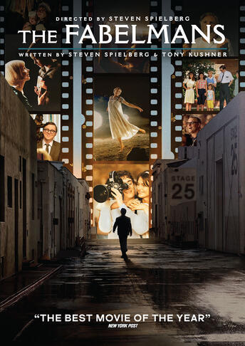
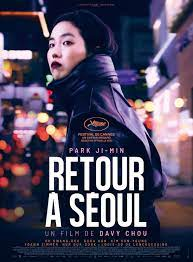

| # | Nom | Description | Affiche |
|---|---|---|---|
| 1 | The Fabelmans | The Fabelmans de Steven Spielberg est un portrait profondément personnel du jeune Sammy Fabelmans qui grandit dans l'Arizona après la Seconde Guerre mondiale. Au fil des années, Sammy capture les aventures de sa famille et se développe en tant que réalisateur de films amateurs mettant en scène ses sœurs et amis. À 16 ans, Sammy découvre une vérité déchirante sur sa mère qui change à jamais la dynamique familiale. |
 |
| 2 | Spider-Man : Seul Contre Tous | Après avoir retrouvé Gwen Stacy, Spider-Man, le sympathique héros originaire de Brooklyn, est catapulté à travers le Multivers, où il rencontre une équipe de Spider-Héros chargée d'en protéger l'existence. Mais lorsque les héros s'opposent sur la façon de gérer une nouvelle menace, Miles se retrouve confronté à eux et doit redéfinir ce que signifie être un héros afin de sauver les personnes qu'il aime le plus. |
|
| 3 | Retour à Seoul | Sur un coup de tête, Freddie, 25 ans, retourne pour la première fois en Corée du Sud, où elle est née. La jeune femme se lance avec fougue à la recherche de ses origines dans ce pays qui lui est étranger, faisant basculer sa vie dans des directions nouvelles et inattendues. |
 |